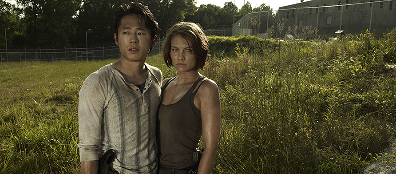

Lors du tournage de la saison 5 de The Walking Dead le magazine EW a interviewé Lauren Cohan et Steven Yeun qui incarnent respectivement Maggie et Glenn. Les deux acteurs expliquent qu’ils préfèrent être piégés ensemble plutôt que d’être en sécurité séparément. Lauren Cohan souligne que leurs personnages ont passé énormément de temps à se chercher dans la saison 4 et qu’il est hors de question que cela se reproduise !

Steven Yeun se montre extrêmement poétique, indiquant que quoi qu’il arrive et qu’importe l’état dans lequel le monde se trouve, la seule chose qui compte est de se trouver avec la personne qu’on aime. « Votre monde est constitué de ceux que vous aimez, de ceux avec qui vous trouvez. Si vous n’êtes plus avec eux, il n’y a plus de sens à votre vie, plus de raison de continuer à vivre » souligne t-il. Cette courte interview nous prouve une fois de plus que Glenn et Maggie sont deux personnages interdépendants et que si l’un meurt, le monde l’autre va complètement s’effondrer.